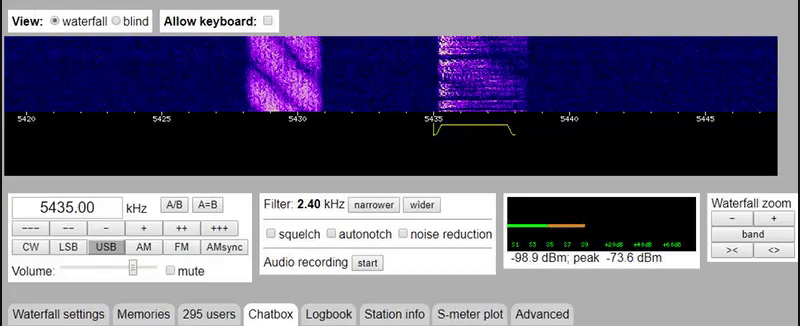
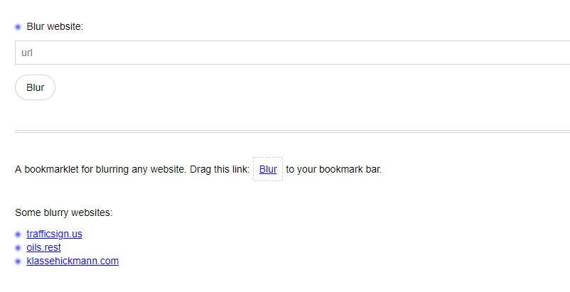
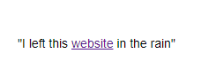
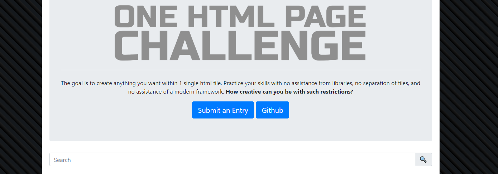
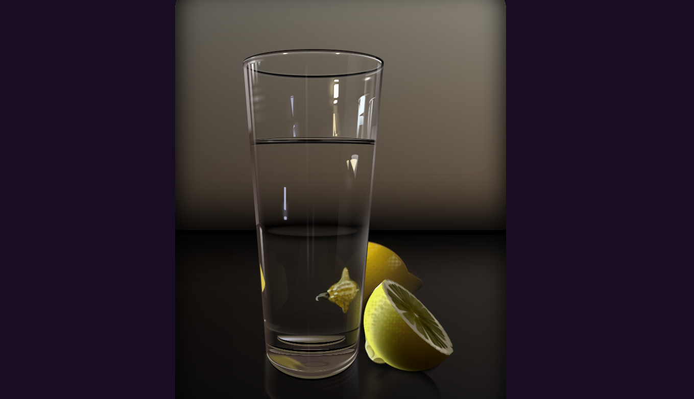
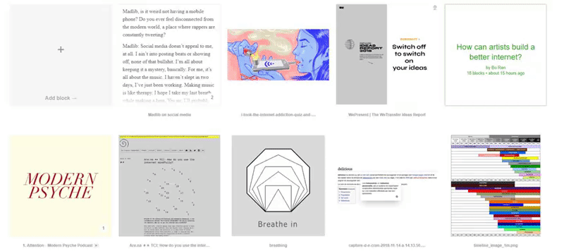

findings - week of 15.7.2019
One night last week I thought of a dumb joke that I tweeted out. I ended up spending most of that same night and a lot of the early morning actually researching numbers stations, and trying to follow through on my joke. that devolved into research on radio communication technology, and that sort of branched off until I had like six tabs open about morse code, some on numbers stations, and a bunch of wikipedia articles. But the one tab I kept going back to was an online radio reciever called websdr (web software defined radio). so, that's my first finding for this post.
number one: websdr.
this sdr is a reciever run by the amateur radio club at the netherlands' university of twente. there are a wide array of controls for fine-tuning your listening experience.
as an absolute hoarder of audio, I found the recording function to be absolutely enthralling. there are so many strange broadcasts to be heard, from straight noise, to polytones, to morse code, to numbers broadcasts, to regular news...the list goes on. in a few hours, I'd collected a modest array of recordings of sounds I thought were interesting. if you're interested, I highly recommend going there and recording some sounds of your own. could be a good source of samples!
number two: blur.website.
I briefly mentioned this in my last blog post, but didn't explain what it was. blur.website is a site created by web architect elliott cost. the only thing it does is accept the url of a website, and then redirect you to a page where you can browse the website as usual — except the website is now near unrecognizably blurry. it's fun! my favorite thing about the website, though, is probably this tagline:
number three: one html page challenge.
the one html page challenge is exactly what it sounds like: participants create anything they want, but using only one html file and nothing else. so, this essentially limits you to what you can do using vanilla html, css, and javascript. take a look at some of the previous submissions, they're all pretty impressive.
here's one of the entries: a single html document containing no image files whatsoever, and zero svg. this still life was created using only vanilla css and html. this is just one of the incredible entries to this challenge.
it really does seem like a fun challenge, and I plan on doing one soon!
number four: echo.
echo is a website that echos your key inputs. it's pretty, and the animation is so satisfying. I don't know why this is so enthralling, but it really is. besides that, I've been doing a lot of research related to key-input reactions in the browser (due to the rhythm game I'm working on), and this site gave me some inspiration!
this is a project by web designer bryce wilner. their homepage is pretty mesmerizing as well. check it out and you'll see what I mean!
number five: how do you use the internet mindfully?
this is a collection of resources in are.na focused around the concept of mindful internet browsing. I initially came across it through this ci article. I kinda like how the article describes the contents of the collections as 'internet-based ephemera'.
I definitely will come back to this collection and probably write about a few of the things in it.
I'm doing some traveling soon so my next post might come out on an even more...sporadic...time frame. hope you enjoyed this one, and I'll see you later!
currently listening to:
- nhelv by silentroom (probably one of my favorite songs right now)
- rolling
girl by wowaka
- under en sort sol by sods/sort
sol
- stitchface by good game